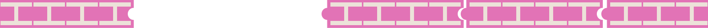
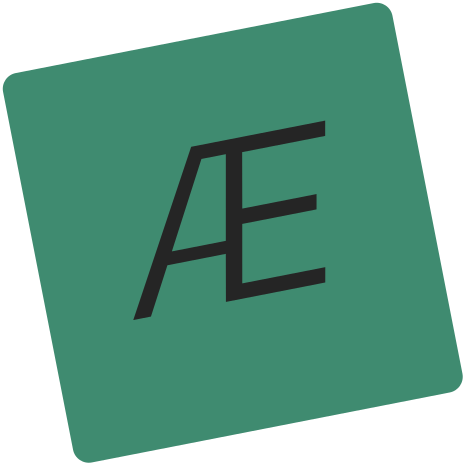
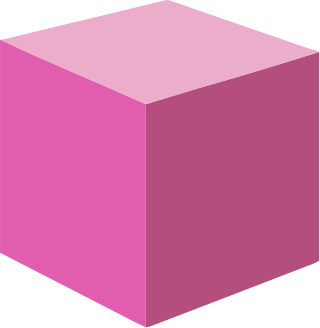
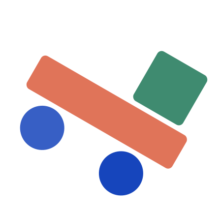
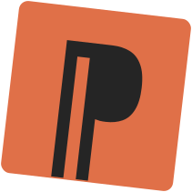
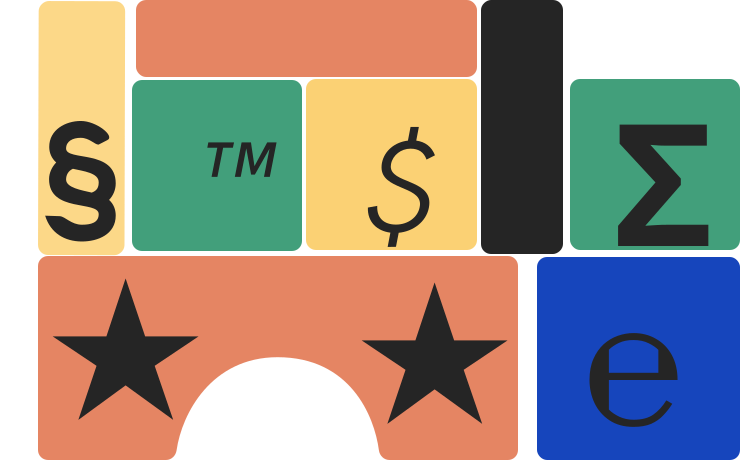
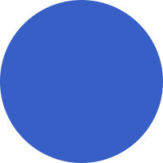
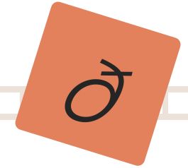
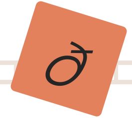
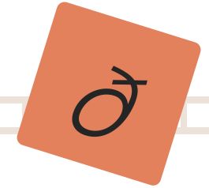

О шрифте
HK Grotesk — это современный шрифт без засечек, вдохновленный
классическими гротесками. У него легкая читаемость, он
ровный
и спокойный. Имеет сбалансированные пропорции с небольшим
контрастом в толщине штрихов. Это придает тексту ритм.
Строчные буквы довольно высокие по отношению к заглавным.
У букв имеются мягкие скругления.

Глифы
Буквы






 

